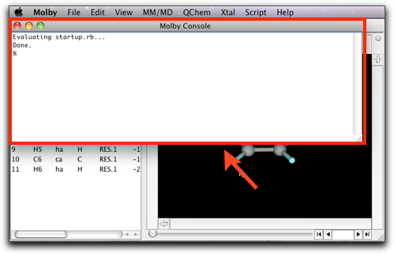
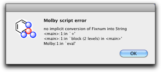
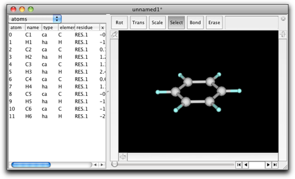
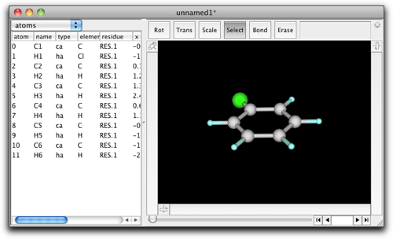
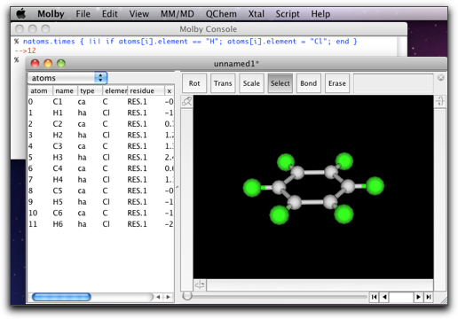
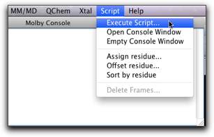
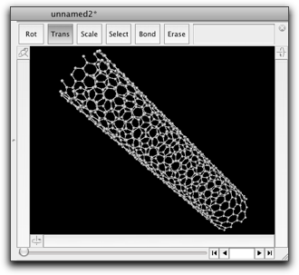
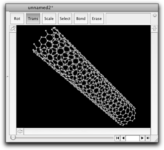

Step Eleven: Using Embedded Ruby Interpreter
One of the most useful features of Molby is the embedded Ruby interpreter. When working on molecular modeling, it is often necessary to modify the model according to some mathematical relations. It is also convenient if we can extract some molecular information by automated "scripts" (i.e. computer programs), and export as a text file that can be processed by graphing software. The embedded Ruby interpreter is very useful under these circumstances. Actually, many functions of Molby itself are implemented by Ruby scripts.
To use the embedded Ruby interpreter in Molby, you need to be familiar with the Ruby programming language. You can find several good on-line tutorials in the Internet. However, you can also get the idea by going through the following sections.
1. Using the Ruby Console
The Ruby console window is open when Molby starts up.

On this window, you can execute Ruby scripts in an interactive manner. Let us try something on it now. Make the console window active by clicking on it, and type "1+2" followed by hitting the Return key. You will find this:
% 1+2 --> 3 %
The Ruby interpreter calculated "1+2", and displayed the answer (3) in the following line.
You can give a longer expression including parenthesis.
% (13.0*13.0+7.0*7.0)/1.365 -->159.70695970696 %
Or use common mathematical functions.
% exp(-2.0) * (sin(0.25) + cos(0.25)) -->0.1646105219232536 %
Usually in Ruby, you need to say Math.exp or Math.sin when using these mathematical functions. In Molby, the prefix Math is not necessary, because Molby automatically "includes" the Math module on startup.
You can also use Strings, which is a series of characters.
% "C" + "32" -->"C32" %
The "32" here is not a number but a string, because it is surrounded by quotation marks. If you omit these quotation marks, what happens?
% "C" + 32

Molby complains with this error dialog. It says "no implicit conversion of Fixnum into String," which means the integer 32 cannot be added to a string "C". Such kind of "type mismatch" error occurs very often, so please get used to it and learn how to fix it.
Another useful feature of Ruby is an Array, which is an ordered collection of other Ruby objects. An array is expressed by comma-separated values surrounded by a pair of brackets.
% [1, 2, 3] -->[1, 2, 3] %
Any Ruby object can be stored in a variable. The name of variables should begin with a lowercase alphabet and should consist of alphabets, number characters and underline "_".
% a = ["apple", "orange", "grape"] -->["apple", "orange", "grape"] % a[0] # This shows how to access the array elements -->"apple"
2. How to Handle Molecules in Molby Scripts
The examples so far used only built-in types (Integer, String, Array) in Ruby, but you will definitely need to handle Molecules from your Molby scripts. Suppose we have a benzene molecule (again).

What if you want to convert it to chlorobenzene? There are two GUI ways; double-click on the H1 atom, and enter "Cl" into the dialog box, or double-click on the "H" text in the "element" column of the property table and change it to "Cl". But there is also a "Ruby" way, as follows:
% atoms[1].element = "Cl" -->"Cl" %

This short piece of code implies some important concepts for coding in Molby. First, atoms denotes the atoms in the current molecule, which is the molecule in the frontmost window (except for the console window). atoms is not really an Array (as in the Ruby terminology), but can be used in a similar way as Array in many aspects. Specifically, it can be "indexed" to extract a specific atom.
atoms[i] # Gives the i-th atom in the current molecule
Please make sure to say atoms[i], not atom[i]. This may be confusing, but it is because atoms is a collection of atoms and [] denotes "extraction of the i-th element."
The second point in the above example is .element = "Cl". In Ruby, a period (.) followed by a word (element) indicates a "method call." Method is a technical term in Ruby programming language; it is a function that is specific to an object. In this case, atoms[1] is an object, and it has a method named element= (including the last equal sign) whose meaning is "to change the element as indicated by the string value in the right side." In this way, the script atoms[1].element = "Cl" causes the element of the atom 1 changed to chlorine.
What if you want to change all hydrogen atoms to chlorine? Here is the code:
% natoms.times { |i| if atoms[i].element == "H"; atoms[i].element = "Cl"; end } -->12 %
This is far more complicated than the previous example. A step-by-step explanation follows.
natoms gives the number of atoms in the current molecule as an integer number. This is actually a method call (natoms is a method of a Molecule object). Why a method is called even though no period is preceding the word? It is because Ruby has a feature called "implicit method call." This will be explained in more detail later.
natoms # Gives 12
times is a method of Integer (which is a built-in class of Ruby), which causes the following code surrounded by a pair of braces to be repeated the given number of times.
natoms.times { ... } # { ... } is executed 12 times
The code within the braces is called "block" in Ruby terminology.
In the repeated code (or "block"), it is very likely that you want to know "how many times have I repeated?" This is achieved by declaring a variable name at the top of the block, surrounded by two vertical bars.
natoms.times { |i| ... } # In { ... }, the variable i indicates the number of repeats
The following piece of codes is often used for testing. (puts prints the arguments to the console.)
% natoms.times { |i| puts i } 0 1 2 3 4 5 6 7 8 9 10 11 -->12
The "12" in the last line is the "result value" of the method times, and the numbers 0 to 11 are the outputs from the puts method. Now you can see the block was executed 12 times with changing the variable i from 0 to 11.
In the block, there is an if statement:
if atoms[i].element == "H"; atoms[i].element = "Cl"; end
The if statement has the following general form:
if <condition>; <statements>; end
The <condition> is evaluated first, and if it is "true", the <statements> are executed; otherwise the <statements> are skipped.
Note: Ruby interprets only false and nil as non-true values. Other values are all "true". Specifically, the number 0 (zero) and an empty string ("") are evaluated to "true" (this is unlike other programming language such as Perl). Many Ruby methods returns nil in case of failure; such methods are suitable for the condition part.
Finally, the element method in the following code is different from the element= method that we previously used:
atoms[i].element == "H"
In this case, the following symbol is "==", which means "are these equal?". This is distinct from the symbol "=", which means "the right side is assigned to the left side." The element symbol is interpreted as the element= method only when it is followed by the assignment symbol "=". The above code is not the case, so that it is interpreted as the element method, which returns the present element symbol as a String.
After execution of the script, the molecule should look like this:

3. About the "Implicit" Method Call
In the preceding section, we saw that natoms was a method of a Molecule object.
natoms # 12, in case of benzene
Why this symbol natoms is regarded as a method call? Actually, when the Ruby interpreter finds a symbol beginning with a lowercase alphabet, it looks for a (local) variable first, and if none is found, then it assumes that the symbol is a method belonging to the "current object". Since Ruby is an object-oriented language, there is always a "current object", which is denoted as self. We can see it on our console:
% self -->Molecule["unnamed1"] %
This piece of code indicates that the "current object" is a Molecule object. In fact, the Molecule object corresponding to the frontmost window becomes the "current object" when a script is executed on the Molby console.
When no molecule is open, the "current object" is "main", which is the standard toplevel object in Ruby.
Sometimes you happen to define a variable with the same name as a method of Molecule. In that case, access to the variable is preferred and the method is no longer called.
% natoms = 2 # Define a variable -->2 % natoms # Now this is an access to the variable, not a method call -->2 %
In this situation, you can explicitly request a method call by specifying self.
% self.natoms # This is a method call -->12 %
A special case is the methods with the assignment symbol ("="). For example, a method show_hydrogens= can control whether the hydrogen atoms are shown or not. However, without specifying self, the expression is always regarded as the assignment to a local variable. Therefore, self should be always explicitly given.
% show_hydrogens = false # This does not change the Molecule's state, just changes a local variable -->false % self.show_hydrogens = false # This changes the Molecule's state -->false %
4. Executing a Ruby Script on a File
From the Ruby console, you can only execute a one-line script. For more complex scripts, or if you want to use the script many times over, it will be more convenient to store the script in a file and execute it. The "Execute Script..." command in the "Script" menu does this job.

There are endless possibilities for the script; here are presented only a few examples. The first script is to create a table of bond lengths including metal atoms (Fe):
# Create a bond table including Fe # Requires Molby fp = open("bond_table.txt", "w") # Create an output file atoms.each { |ap| # This is another way to repeat over all atoms; # ap points to the atom on each iteration if ap.element == "Fe" r1 = ap.r # The cartesian coordinate of Fe ap.connects.each { |n| # ap.connects is an array of atom indices connected to this atom ap2 = atoms[n] # The atom connected to Fe r2 = ap2.r # The cartesian coordinate of the atom d = (r - r2).length # The bond length fp.printf "%s-%s %.3f\n", ap.name, ap2.name, d # Write a table entry to the file } # End loop (ap.connects) end # End if } # End loop (atoms.each) fp.close # We are done with this file
Save this text to a file, select "Execute Script..." command (be sure that the target molecule is on the front), and choose the script file. After execution, a file named "bond_table.txt" will be generated in the same directory as the script file.
Here is another example, which works on a MD trajectory. For each frame, the molecule is reoriented so that the atom 0 is at the origin and atoms 1 and 2 are on the xy plane (with the atom 1 on the x-axis), and calculate the center of mass of the atoms 6 to 11. Such processing is useful to visualize how a particular part of the molecule moves around throughout the MD run.
# Reorient the molecule and extract center of some group # Requires Molby fp = open("extract_group.txt", "w") # Create an output file each_frame { |n| # This is an idiom to iterate over all frames rotate_with_axis(1, 2, 0) # Reorientation of the molecule is so frequently used # that the Molecule class has a method to do it r = center_of_mass(6..11) # Also has a method to calculate the center of mass fp.printf "%d %.6f %.6f %.6f\n", n, r.x, r.y, r.z # Write the coordinates } fp.close # We are done with this file
The last example generates a model of carbon nanotube with any chirality and length as you like.
# Create a model of carbon nanotube # Requires Molby r = 1.42 # The C-C bond length n = 10 # The default chirality index m = 5 # (ibid) aspect = 5.0 # The default aspect ratio (length / diameter) # Dialog to ask the chirality index and the aspect ratio h = Dialog.run("Create Carbon Nanotube") { layout(3, item(:text, :title=>"Chirality Index"), item(:textfield, :width=>80, :tag=>"n", :value=>n.to_s), item(:textfield, :width=>80, :tag=>"m", :value=>m.to_s), item(:text, :title=>"Aspect Ratio"), item(:textfield, :width=>160, :tag=>"aspect", :value=>sprintf("%.1f", aspect)), -1) } exit if h[:status] != 0 aspect = h["aspect"].to_f n = h["n"].to_i m = h["m"].to_i k = aspect / (PI * sqrt(3.0)) points = [] # The limiting points are (0, 0), (n, m), (k(n+2m), -k(2n+m)), (k(n+2m)+n, -k(2n+m)+n) # Search for the lattice points that are within the parallelogram # surrounded by the above points # det is the determinant of the matrix that converts the unit cell to the above parallelogram delta = 2 * k * (n * n + m * m + n * m) (0..(k * (n + 2 * m) + n).ceil).each { |s| ((-k * (2 * n + m)).floor..m).each { |t| [0, 2.0/3.0].each { |d| # For two lattice points within the unit cell ss = (k * (2 * n + m) * (s + d) + k * (n + 2 * m) * (t + d)) / delta tt = (m * (s + d) - n * (t + d)) / delta if ss >= 0.0 && ss < 1.0 && tt >= 0.0 && tt <= 1.0 points.push([ss, tt, s, t]) # This point is within the parallelogram end } } } # Create nanotube: line up [ss, tt] into cylindric shape rad = sqrt(3.0) * r * sqrt(n * n + m * m + n * m) / (2 * PI) len = rad * 2 * aspect mol = Molecule.new points.each { |p| ap = mol.create_atom ap.element = "C" ap.atom_type = "ca" ap.r = [rad * cos(2 * PI * p[0]), rad * sin(2 * PI * p[0]), len * p[1]] } mol.guess_bonds # Show the result in a new window mol2 = Molecule.open mol2.add(mol)
 

5. Where to Go from Here
The embedded Ruby capability is very strong, and cannot be fully explained in this short tutorial. If you are interested, read carefully the reference of the Ruby extension. There are also many scripts in the Molby application, which you can examine by opening the "Scripts" folder (which is within the Application package in Mac OS X, and in the same folder as the Molby application in Windows).